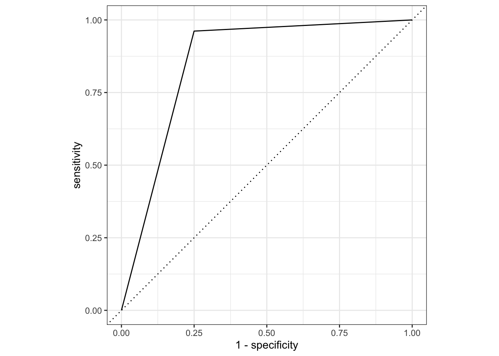

This exercise practices model fitting using the tidymodels framework.
Here, we are going to fit a model using the nlmixr2data package and data. First, let’s read in the .csv file and check its structure.
#Loading packageslibrary(tidyverse) #This includes ggplot2, tidyr, readr, dplyr, stringr, purr, forcatslibrary(knitr)library(here) # For file pathslibrary(kableExtra) # For tableslibrary(gt) # For tableslibrary(gtsummary) # For tableslibrary(renv) # For package managementlibrary(patchwork) # For combining plots#Reading in the csv filemavo <-read_csv(here("fitting-exercise", "Mavoglurant_A2121_nmpk.csv"))#Checking the packaging (displaying first and last few rows of data)nrow(mavo)
Next, let’s get a quick visual idea of the data by plotting the outcome variable DV as a function of time, stratified by DOSE and using ID as a grouping factor.
# Plotting the outcome variable (DV) as a function of time, stratified by DOSE and using ID as a grouping factor. ChatGPT helped me with this code.mavo %>%ggplot(aes(x = TIME, y = DV, color =factor(DOSE))) +geom_line() +facet_wrap(~ID) +labs(x ="Time", y ="Outcome Variable (DV)", color ="DOSE") +theme_minimal()
Per Dr. Handel’s guidance, we can see that the formatting of the dataset still looks off because some individuals received the drug more than one (OCC = 1 and OCC = 2). We will now remove all entries with OCC = 2.
# Filter data to include only the first dose and store it in mavo_filteredmavo_filtered <- mavo %>%filter(OCC ==1) # Filter observations where OCC is equal to 1# Plotting the outcome variable (DV) as a function of time, stratified by DOSE and using ID as a grouping factormavo_filtered %>%ggplot(aes(x = TIME, y = DV, color =factor(DOSE))) +geom_line() +facet_wrap(~ID) +labs(x ="Time", y ="Outcome Variable (DV)", color ="DOSE") +theme_minimal()
Next, let’s remove the TIME=0 values for each individual and compute the sum of DV for each individual, called variable Y. We will also write code that keeps only the TIME=0 entries for each individual. Finally, we will combine the two datasets so you have a single one that has the time=0 entry for everyone, and an extra column for total drug concentration in a data frame size 120 by 18.
# Remove TIME=0 values for each individual and compute the sum of DV for each individualmavo_filteredDV <- mavo_filtered %>%filter(TIME !=0) %>%# Remove TIME=0 values for each individualgroup_by(ID) %>%# Group by IDsummarize(Y =sum(DV)) # Compute the sum of DV for each individual# Keep only the TIME=0 entries for each individualmavo_timeZero <- mavo_filtered %>%filter(TIME ==0)# Combine two datasetsmavo_combined <-left_join(mavo_timeZero, mavo_filteredDV, by ="ID")
Now, we will do more cleaning by only including the following variables: Y, DOSE, RATE, AGE, SEX, RACE, WT, HT. We also must convert RACE and SEX to factor variables.
# Selecting only the specified variables from mavo_combinedmavo_combined_subset <- mavo_combined %>%select(Y, DOSE, RATE, AGE, SEX, RACE, WT, HT) %>%# Select only the specified variablesmutate(RACE =factor(RACE), # Convert RACE and SEX variables to factor variablesSEX =factor(SEX))# View the structure of the updated dataframestr(mavo_combined_subset)
Now, let’s create boxplots for variables DOSE and RATE.
# Create boxplots for DOSE and RATE. CoPilot assisted with this code.plot2 <- mavo_combined_subset %>%ggplot(aes(x =factor(DOSE), y = Y)) +geom_boxplot() +labs(x ="Dose", y ="Y") +theme_minimal()plot2
From these boxplots, we see that we have some outliers in the Y variable. If doing an actual project, we might want to remove them, but I will maintain them for this exercise.
Now let’s create some scatterplots to visualize relationships between Y and AGE, WT, and HT.
# Create scatterplots for Y vs. AGE, WT, and HT. CoPilot helped with this code.plot4 <- mavo_combined_subset %>%ggplot(aes(x = AGE, y = Y)) +geom_point() +labs(x ="Age", y ="Y") +theme_minimal()plot4
plot5 <- mavo_combined_subset %>%ggplot(aes(x = WT, y = Y)) +geom_point() +labs(x ="Weight", y ="Y") +theme_minimal()plot5
plot6 <- mavo_combined_subset %>%ggplot(aes(x = HT, y = Y)) +geom_point() +labs(x ="Height", y ="Y") +theme_minimal()plot6
# Laying out in gridpairplot <- plot4 / plot5 / plot6pairplot
Now, let’s fit a linear model to the continuous outcome Y using the main predictor of interest, DOSE.
# ChatGPT and CoPilot helped with this code. I also used this website: https://www.tidymodels.org/start/models/ and this part of TMWR https://www.tmwr.org/performance (9.2 Regression Metrics) to guide me through the process.# One option is create a linear model using the lm() function from base R#mavo_lm <- lm(Y ~ DOSE, data = mavo_combined_subset)# Other option using linear_reg() (default engine, OLS) from tidymodelsmavo_lm1 <-linear_reg() %>%set_engine("lm") %>%fit(Y ~ DOSE, data = mavo_combined_subset)# Use broom::tidy() to tidy resultstidy(mavo_lm1)
# Predicted numeric outcome named .pred. Now we will match predicted values with corresponding observed outcome valuesmavo_lm1_pred <-bind_cols(mavo_lm1_pred, mavo_combined_subset %>%select(Y))mavo_lm1_pred
# Plot data before computing metricsggplot(mavo_lm1_pred, aes(x = Y, y = .pred)) +geom_abline(lty =2) +# Add a dashed line to represent the 1:1 linegeom_point(alpha =0.5) +labs(x ="Observed (log10)", y ="Predicted (log10)") +#Scale and size x- and y-axis uniformlycoord_obs_pred()
# Create metric set including RMSE and R-squaredmetrics_lm1 <-metric_set(rmse, rsq, mae) # MAE for funmetrics_lm1(mavo_lm1_pred, truth = Y, estimate = .pred)
# A tibble: 3 × 3
.metric .estimator .estimate
<chr> <chr> <dbl>
1 rmse standard 666.
2 rsq standard 0.516
3 mae standard 517.
Here, we can see from our R-squared statistic, that the independent variables explain about 63% of the model, although this doesn’t necessarily tell us if our model is good for the data at hand. Our RMSE, which is the square root of the average of squared differences between observed and predicted values, is usually supposed to be lower (less distance between observed and predicted). Here, our RMSE is quite high, 583.
Next, let’s fit a linear model to the continuous outcome Y using all predictors. Then we will go through the same process and get RMSE and R-squared.
# I used the Tidymodels website: https://www.tidymodels.org/learn/statistics/tidy-analysis/ for this code# Create a linear model using linear_reg() from tidymodelsmavo_lm2 <-linear_reg() %>%set_engine("lm") %>%fit(Y ~ DOSE + RATE + AGE + SEX + RACE + WT + HT, data = mavo_combined_subset)# Use broom::tidy() to tidy resultsoutput_mavo_lm2 <-tidy(mavo_lm2)# Use dotwhisker::dwplot() to visualize the resultsdwplot(mavo_lm2)
# Produce predictions for RMSE and R-squaredmavo_lm2_pred <-predict(mavo_lm2, new_data = mavo_combined_subset %>%select(-Y))mavo_lm2_pred
# Predicted numeric outcome named .pred. Now we will match predicted values with corresponding observed outcome valuesmavo_lm2_pred <-bind_cols(mavo_lm2_pred, mavo_combined_subset %>%select(Y))mavo_lm2_pred
# Plot data before computing metricsggplot(mavo_lm2_pred, aes(x = Y, y = .pred)) +geom_abline(lty =2) +# Add a dashed line to represent the 1:1 linegeom_point(alpha =0.5) +labs(x ="Observed (log10)", y ="Predicted (log10)") +#Scale and size x- and y-axis uniformlycoord_obs_pred()
# Create metric set including RMSE and R-squaredmetrics_lm2 <-metric_set(rmse, rsq, mae) # MAE for funmetrics_lm2(mavo_lm2_pred, truth = Y, estimate = .pred)
# A tibble: 3 × 3
.metric .estimator .estimate
<chr> <chr> <dbl>
1 rmse standard 583.
2 rsq standard 0.629
3 mae standard 435.
I got R-squared and RMSE statistics that were very similar for this model as for the previous model. We can see from our R-squared statistic, that the independent variables explain about 63% of the model, although this doesn’t necessarily tell us if our model is good for the data at hand. Our RMSE, which is the square root of the average of squared differences between observed and predicted values, is usually supposed to be lower (less distance between observed and predicted). Here, our RMSE is quite high, 583.1.
Logistic models
Now we will consider SEX as the outcome of interest and fit a logistic model to the categorical/binary outcome SEX using the main predictor of interest, DOSE. Then we will compute accuracy and ROC-AUC and print them.
# https://www.datacamp.com/courses/modeling-with-tidymodels-in-r I used videos from this online course to help me with this code, specifically the Classification module.# Data resampling.mavo_log1_split <-initial_split(mavo_combined_subset, prop =0.75, strata = SEX) # Data is similar to training and testing datasets# Create training and test datasetsmavo_log1_train <- mavo_log1_split %>%training()mavo_log1_test <- mavo_log1_split %>%testing()# Create a logistic model using logistic_reg() from parsnipmavo_log1 <-logistic_reg() %>%set_engine("glm") %>%set_mode("classification") %>%#specify modelfit(SEX ~ DOSE, data = mavo_log1_train) #Pass model object to fit(), specify model formula, provide training data# Use broom::tidy() to tidy resultsoutput_mavo_log1 <-tidy(mavo_log1)# Predicting outcome categoriesclass_preds <- mavo_log1 %>%predict(new_data = mavo_log1_test, type ='class') # New_data specifies dataset on which to predict new values; type class provides categorical predictions; standardized output from predict()class_preds
# Estimating probabilities. Set type to prob to provide estimated probabilities for each outcome categoryprob_preds <- mavo_log1 %>%predict(new_data = mavo_log1_test, type ='prob')prob_preds
# Combining results using model evaluation with yardstick packagemavo_log1_results <- mavo_log1_test %>%select(SEX) %>%bind_cols(class_preds, prob_preds) # Bind columns of two datasets together# Confusion matrix with yardstickconf_mat(mavo_log1_results, truth = SEX, estimate = .pred_class)
Truth
Prediction 1 2
1 26 4
2 0 0
# Classification accuracy (generally not the best metric)accuracy <-accuracy(mavo_log1_results, truth = SEX, estimate = .pred_class)print(accuracy)
The accuracy is 0.866, and the ROC-AUC performance is 0.65, which gives us a D classification performance out of a scale of A to F. Clearly, this is not a good model fit.
Now we will fit a logistic model to the categorical/binary outcome SEX using all predictors of interest except RATE. Then we will compute accuracy and ROC-AUC and print them.
#For this code, I asked ChatGPT to take the previous code I had written with the help of Data Camp and change it to include all the predictor variables and rename it to mavo_log2 wherever it had been mavo_log1.# Data resamplingmavo_log2_split <-initial_split(mavo_combined_subset, prop =0.75, strata = SEX) # Create training and test datasetsmavo_log2_train <- mavo_log2_split %>%training()mavo_log2_test <- mavo_log2_split %>%testing()# Create a logistic model using logistic_reg() from parsnipmavo_log2 <-logistic_reg() %>%set_engine("glm") %>%set_mode("classification") %>%fit(SEX ~ DOSE + AGE + RACE + RATE + WT + HT + Y, data = mavo_log2_train)
Warning: glm.fit: algorithm did not converge
Warning: glm.fit: fitted probabilities numerically 0 or 1 occurred
# Use broom::tidy() to tidy resultsoutput_mavo_log2 <-tidy(mavo_log2)# Predicting outcome categoriesclass_preds <- mavo_log2 %>%predict(new_data = mavo_log2_test, type ='class')# Estimating probabilitiesprob_preds <- mavo_log2 %>%predict(new_data = mavo_log2_test, type ='prob')# Combining results using model evaluation with yardstick packagemavo_log2_results <- mavo_log2_test %>%select(SEX) %>%bind_cols(class_preds, prob_preds)# Confusion matrix with yardstickconf_mat(mavo_log2_results, truth = SEX, estimate = .pred_class)
Truth
Prediction 1 2
1 25 1
2 1 3
# Classification accuracyaccuracy <-accuracy(mavo_log2_results, truth = SEX, estimate = .pred_class)print(accuracy)
# ROC (ROC used to visualize performance across probability thresholds)roc_curve_data <- mavo_log2_results %>%roc_curve(truth = SEX, .pred_1) # Plot ROC curveautoplot(roc_curve_data)

# Calculate ROC AUCroc_auc <-roc_auc(mavo_log2_results, truth = SEX, .pred_1)print(roc_auc)
Here, our accuracy is 0.875 and the ROC-AUC performance is 0.875, which gives us a B classification performance out of a scale of A to F. This is a better model fit than the previous one, but still not great.
Exercise Part 2 (Module 10: Model Improvement)
Model Performance Assessment 1
Let’s set the random seed using Dr. Handel’s last method. Then we will compute predictions for the two models (the first using only dose as a predictor and the second using all predictors), using observed and predicted values to compute RMSE of the best-fitting model.
# Fix the random numbers by setting the seed # This enables the analysis to be reproducible when random numbers are used rngseed =1234set.seed(rngseed)# Select only the specified variables from mavo_combined_subset (not Race)mavo_combined_subset <- mavo_combined_subset %>%select(Y, DOSE, AGE, SEX, WT, HT) # Select only the specified variables# View the structure of the updated dataframestr(mavo_combined_subset)
# Create training data# Put 3/4 of the data into the training set data_split <-initial_split(mavo_combined_subset, prop =3/4)# Create data frames for the two sets:train_data <-training(data_split)test_data <-testing(data_split)
Now we will run two linear models on our continuous outcome of interest (Y). The first model will only use DOSE as a predictor. The second model will us all predictors. For both models, the metric to optimize will be RMSE.
# Create a linear model using linear_reg() from tidymodels using dose as a predictormavo_lm3 <-linear_reg() %>%set_engine("lm") %>%set_mode("regression") %>%#specify modelfit(Y ~ DOSE, data = train_data) #Pass model object to fit(), specify model formula, provide training datamavo_lm3
parsnip model object
Call:
stats::lm(formula = Y ~ DOSE, data = data)
Coefficients:
(Intercept) DOSE
535.45 53.42
# Predicted numeric outcome named .pred. Now we will match predicted values with corresponding observed outcome valuesmavo_lm3_pred <-bind_cols(mavo_lm3_pred, train_data %>%select(Y))mavo_lm3_pred
# Create metric set including RMSE and R-squaredmetrics_lm3 <-metric_set(rmse, rsq, mae) # MAE for funmetrics_lm3(mavo_lm3_pred, truth = Y, estimate = .pred)
# A tibble: 3 × 3
.metric .estimator .estimate
<chr> <chr> <dbl>
1 rmse standard 703.
2 rsq standard 0.451
3 mae standard 546.
# Create a linear model using linear_reg() from tidymodels using all predictors (Dr Handel's code somewhat)mavo_lm4 <-linear_reg() %>%set_engine("lm") %>%fit(Y ~ ., data = train_data)tidy(mavo_lm4)
# Compute the RMSE and R squared for null model using Dr. Handel's Codemetrics_lm4 <- mavo_lm4 %>%predict(train_data) %>%bind_cols(train_data) %>%metrics(truth = Y, estimate = .pred)metrics_lm4
# A tibble: 3 × 3
.metric .estimator .estimate
<chr> <chr> <dbl>
1 rmse standard 627.
2 rsq standard 0.562
3 mae standard 486.
# Run null-model (predict the mean outcome for each observation without predictor information). For the following code I used ChatGPT, and I also looked at my classmate Taylor Glass's code.mavo_lm0 <-null_model(mode ="regression") %>%set_engine("parsnip") %>%fit(Y ~1, data = train_data)# Compute the RMSE and R squared for null model using Dr. Handel's Codemetrics_lm0 <- mavo_lm0 %>%predict(train_data) %>%bind_cols(train_data) %>%metrics(truth = Y, estimate = .pred)metrics_lm0
# A tibble: 3 × 3
.metric .estimator .estimate
<chr> <chr> <dbl>
1 rmse standard 948.
2 rsq standard NA
3 mae standard 765.
For model 1 (mavo_lm3), the RMSE is 702; for model 2 (mavo_lm4), the RMSE is 627, and for the null model (mavo_lm0), the RMSE is 948.
Model Performance Assessment 2
Now we will perform a 10-fold cross-validation , fitting the 2 models to the data 10 times.
The first model is the simple linear model, only using DOSE as a predictor.
# Simple linear model# Set the seed for reproducibilityset.seed(rngseed)# Create 10-fold cross-validationfolds <-vfold_cv(train_data, v =10)folds
# Set model specificationmavo_spec <-linear_reg() %>%set_engine("lm")# Create and initialize workflow that bundles together model specification and formula. ChatGPT helped me here.mavo_wf <-workflow() %>%add_model(mavo_spec) %>%add_formula(Y ~ DOSE)fit_resamples(mavo_wf, resamples = folds)
# A tibble: 2 × 6
.metric .estimator mean n std_err .config
<chr> <chr> <dbl> <int> <dbl> <chr>
1 rmse standard 691. 10 67.5 Preprocessor1_Model1
2 rsq standard 0.512 10 0.0592 Preprocessor1_Model1
We can see that the RMSE for the linear model only using DOSE as a predictor decreased to 690 (from 702). Further, we can see the standard error (67.5), which allows us to understand variability. It appears that the CV method works better than the train and test method.
Now let’s do the same thing for the complex linear model using all predictors.
# Set the seed for reproducibilityset.seed(rngseed)# Create and initialize workflow that bundles together model specification and formula. ChatGPT helped me here.mavo_wf2 <-workflow() %>%add_model(mavo_spec) %>%add_formula(Y ~ .,)fit_resamples(mavo_wf2, resamples = folds)
# A tibble: 2 × 6
.metric .estimator mean n std_err .config
<chr> <chr> <dbl> <int> <dbl> <chr>
1 rmse standard 646. 10 64.8 Preprocessor1_Model1
2 rsq standard 0.573 10 0.0686 Preprocessor1_Model1
For the complex linear model, we have an RMSE of 645 with a standard deviation of 57. This is a better fit than the simple linear model using CV (690). However, the RMSE of 645 (with a standard error of 64.8) is higher than the complex linear model tested using train and test, which was 627. I am not sure why this is the case, so if any of my classmates know, that would be great.
Finally, we will run the code that creates the CV again, but we will choose a different value for the random seed. Although our RMSE values change, the overall patterns between the RMSE values for the fits for training data with and without CV should stay the same.
# Set new seed for reproducibilityset.seed(13579)# Simple linear model# Create and initialize workflow that bundles together model specification and formula. ChatGPT helped me here.mavo_wf <-workflow() %>%add_model(mavo_spec) %>%add_formula(Y ~ DOSE)fit_resamples(mavo_wf, resamples = folds)
# A tibble: 2 × 6
.metric .estimator mean n std_err .config
<chr> <chr> <dbl> <int> <dbl> <chr>
1 rmse standard 691. 10 67.5 Preprocessor1_Model1
2 rsq standard 0.512 10 0.0592 Preprocessor1_Model1
# Complex linear model# Create and initialize workflow that bundles together model specification and formula. ChatGPT helped me here.mavo_wf <-workflow() %>%add_model(mavo_spec) %>%add_formula(Y ~ .,)fit_resamples(mavo_wf, resamples = folds)
# A tibble: 2 × 6
.metric .estimator mean n std_err .config
<chr> <chr> <dbl> <int> <dbl> <chr>
1 rmse standard 646. 10 64.8 Preprocessor1_Model1
2 rsq standard 0.573 10 0.0686 Preprocessor1_Model1
For the simple linear model, we get an RMSE of 690 and a standard error of 67.5. This is the same as I got for using a different random seed previously. For the complex linear model, we get an RMSE of 645 and a standard error of 64.8. This is also the same as I got using a different random seed. The multiple linear regression continues to outperform the simple linear regression.
Rachel Robertson contributed to this section of the fitting exercise
We will begin by adding the predictions made by the models to the original data frame that contains observations for each Y. They will then be plotted together with a 45 degree slope to compare the predictions with the outcome (Y).
# Augment linear regressions into data framemavo_lm3_aug <-augment(mavo_lm3, new_data = train_data) %>%select("Y", ".pred", ".resid") # select only the Y column and predictionsnames(mavo_lm3_aug)[names(mavo_lm3_aug) =='.pred'] <-'lm3_pred'# change name of prediction variablenames(mavo_lm3_aug)[names(mavo_lm3_aug) =='.resid'] <-'lm3_resid'# change name of residual variablemavo_lm4_aug <-augment(mavo_lm4, new_data = train_data)%>%select("Y", ".pred", ".resid")names(mavo_lm4_aug)[names(mavo_lm4_aug) =='.pred'] <-'lm4_pred'names(mavo_lm4_aug)[names(mavo_lm4_aug) =='.resid'] <-'lm4_resid'mavo_lm0_aug <-augment(mavo_lm0, new_data = train_data) %>%select("Y", ".pred", ".resid") # select y and prediction columnnames(mavo_lm0_aug)[names(mavo_lm0_aug) =='.pred'] <-'lm0_pred'names(mavo_lm0_aug)[names(mavo_lm0_aug) =='.resid'] <-'lm0_resid'combined_pred <- mavo_lm3_aug %>%left_join(mavo_lm4_aug, by='Y') %>%left_join(mavo_lm0_aug, by='Y') # left join all three augmented data frames by Ystr(combined_pred) # Check the structure of the combined data frame
tibble [90 × 7] (S3: tbl_df/tbl/data.frame)
$ Y : num [1:90] 3004 1347 2772 2028 2353 ...
$ lm3_pred : num [1:90] 3207 1871 2539 1871 3207 ...
$ lm3_resid: num [1:90] -202 -524 233 157 -853 ...
$ lm4_pred : num [1:90] 3303 1953 2745 2081 2894 ...
$ lm4_resid: num [1:90] -298.8 -605.9 26.8 -53.6 -540.8 ...
$ lm0_pred : num [1:90] 2509 2509 2509 2509 2509 ...
$ lm0_resid: num [1:90] 495 -1163 263 -482 -156 ...
# Plot the combined data framecombinedplot <-ggplot(combined_pred, aes(x = Y)) +# add observed Y valuesgeom_point(aes(y = lm3_pred, color ="Dose v. Y model")) +# add aes layer for lm3 predictions with a color for model namegeom_point(aes(y = lm4_pred, color ="Full model")) +# add aes layer for lm4 predictions with a color for model namegeom_point(aes(y = lm0_pred, color ="Null model")) +# add aes layer for lm0 predictions with a color for model namegeom_abline(intercept =0, slope =1, linetype ="dashed") +# create 45 degree linelabs(x ="Outcome (Y)", y ="Model Predictions", title ="Observed Value of Y versus Model Predictions") +# add axis labels and titlescale_color_manual(values =c("Dose v. Y model"="red", "Full model"="blue", "Null model"="green")) +# add colors for each model nametheme_minimal()combinedplot
# Save figurefigure_file <-here("fitting-exercise", "combinedplot.png")ggsave(filename = figure_file, plot=combinedplot, bg="white")
By plotting all three models together, we can see that the null model produces a singlular horizontal line and the model including just dose produces three horizontal lines. This is likely because there are 3 values of dose that were possibly administered. Lastly, the full model (including all the predictors) produces a more randomly distributed scatter plot, which best captures the trend of the Y variable. The lower predictions of the full model seem to be closer to the line than the larger values, which suggests that the model still might not be capturing a certain trend within the observed values.
# Residual plotresidualplot <-ggplot(mavo_lm4_aug, aes(x = lm4_pred, y = lm4_resid)) +geom_point() +# Scatter plot of residualsgeom_hline(yintercept =0, linetype ="dashed") +# add a dashed horizontal line at y = 0labs(x ="Predicted Values", y ="Residuals", title ="Residual Plot") +coord_cartesian(ylim =c(-2500, 2500)) +# set y-axis range to -2500, 2500theme_minimal()residualplot
# Save figurefigure_file <-here("fitting-exercise", "residualplot.png")ggsave(filename = figure_file, plot=residualplot, bg="white")
We can see from the residual plot of the full model, that there is some pattern. The dots seem more scattered as the predicted values increase. There are also outliers where there are larger predicted values.
We will now examine the model fit by bootstrapping the model. We will break it up into 100 resamples using the rsample package and then perform a loop to bootstrap all the samples. The predictions will be stored in an array vector and then can be plotted with metrics against the original Y values to assess the model fit.
# set seedset.seed(rngseed)# bootstrappinglm4_boot <-bootstraps(train_data, times =100) # bootstrap the train data 100 timesboot_pred <-array(NA, dim =c(nrow(train_data), length(lm4_boot))) # create an array vector to store the bootstrap data# creating a loopfor (i in1:length(lm4_boot)) { bootstrap <-analysis(lm4_boot$splits[[i]]) # extract the splits from the bootstrap model <-lm(Y ~ ., data = bootstrap) # fit the model for the bootstrap using full model formula and bootstrap sample data pred <-predict(model, newdata = train_data) # predict the new data from training data boot_pred[,i] <- pred # put the predictions into the array vector}dat_bs <-analysis(lm4_boot$splits[[i]]) # extract individual bootstrap samplesprint(dat_bs)
# compute the mean and confidence intervals mean_ci <-function(x) { # use functions(x) to list the functions to calculate both the mean and CI mean <-mean(x) #mean(x) applies mean function to unspecified vector ci <-quantile(x, c(0.025, 0.5, 0.975)) #applies 95% CI quantiles to vectorreturn(c(mean, ci))}preds <-apply(boot_pred, 2, mean_ci) # apply the customized function for mean and cipreds_t <-t(preds) # t() transposes the matrix into a data frame# Placing the bootstrap data and predictions into a new data frameplot_data <-data.frame( #make a new data frame to contain the observed Y, predictions from bootstrap, and boundsobserved =c(train_data$Y), # Observed valuespoint_estimates =c(mavo_lm4_aug$lm4_pred), # Point estimates from full modelmedian = preds_t[, 2], # Median from bootstrap samplinglower_CI = preds_t[, 3], # Lower confidence limit from bootstrap samplingupper_CI = preds_t[, 4] # Upper confidence limit from bootstrap sampling)# plot the point estimates and bounds along with the observed Yggplot(plot_data, aes(x = observed, y = point_estimates)) +geom_point(color ="black") +# add layer for point estimatesgeom_point(aes(y = median), color ="blue") +# add layer for mediangeom_errorbar(aes(ymin = lower_CI, ymax = upper_CI), color ="red", width =0.2) +# add layer for confidence intervalsgeom_abline(intercept =0, slope =1, linetype ="dashed") +# add 45 degree linelabs(x ="Y Values Observed", y ="Mean Predicted Values", title ="Observed vs Predicted Values with Bootstrap Confidence Intervals") +# Axes labels and titletheme_minimal()
The plot above shows the predicted values (black), mean predicted values from the bootstrap (blue), lower and upper limits of the median predicted values (red), compared to a 45 degree line (black, dotted). The predicted values follow the dotted line closely, showing a fairly good fit, however the mean and CI from bootstrapping follow a horizontal line and are more dense at lower values than higher values.
This plot shows that the model fit predictions from the cross validation are a better representation than the mean predictions made from bootstrapping. This may be because the mean can be shifted by skewness. The predictions also seem skewed as they become more sparse at higher values. The confidence interval bars (red) show the upper and lower limits predicted by bootstrapping. Although they follow a horizontal line, the CI bars are more dense towards the lower end of the y-axis, which also might represent skewness, or a trend that is not captured by the model. The mean values also seem to get sparser on the high end of the y-axis, indicating the same problem as the CI distribution. This might be fixed by adding more variables (columns) to the data set or increasing the sample size (rows) of the data in the model.
Exercise Part 3: Back to Cassia
Now, we will use the fit of model 2 from the training data to make predictions for the test data. This will give us an indication of how the model generalizes to data that wasn’t used to construct the model.
# ChatGPT helped me with this code. Assuming mavo_lm4 is already trained and test_data is prepared# Make predictions on training datatrain_pred <-predict(mavo_lm4, new_data = train_data)print(train_pred)
# Create dataframes for plottingtrain_data_plot <-data.frame(Observed = train_data$Y,Predicted = train_pred$.pred)test_data_plot <-data.frame(Observed = test_data$Y,Predicted = test_pred$.pred)# Create the plotfinalplot <-ggplot() +geom_point(data = train_data_plot, aes(x = Observed, y = Predicted, shape ="train_observed"), color ="blue", alpha =0.5) +# Use a specific shape for observed in training datageom_point(data = train_data_plot, aes(x = Observed, y = Predicted, shape ="train_predicted"), color ="blue", alpha =0.5) +# Use a different shape for predicted in training datageom_point(data = test_data_plot, aes(x = Observed, y = Predicted, shape ="test_observed"), color ="red", alpha =0.5) +# Use a specific shape for observed in test datageom_point(data = test_data_plot, aes(x = Observed, y = Predicted, shape ="test_predicted"), color ="red", alpha =0.5) +# Use a different shape for predicted in test datageom_abline(intercept =0, slope =1, linetype ="dashed", color ="black") +# Add identity linescale_shape_manual(values =c("train_observed"=1, "train_predicted"=2, "test_observed"=3, "test_predicted"=4)) +# Assign specific shapeslabs(x ="Observed", y ="Predicted", title ="Predicted vs Observed") +theme_minimal()finalplot
# Save figurefigure_file <-here("fitting-exercise", "finalplot.png")ggsave(filename = figure_file, plot=finalplot, bg="white")
Saving 7 x 5 in image
As Dr. Handel wrote, we can see that the observed/predicted values for the test data are mixed in with the observed/predicted values for the train data, which means the model is fitting well, and is not overfitting.
Now let’s do some thinking about the overall model assessment: 1. All of our models perform better than the null model given the RMSEs computed above and the plotting. 2. Model 1, which only uses DOSE as a predictor variable, improves the results over the null model because it has a lower RMSE. These results make sense given that the null model is only computing the mean. However, Model 1 is not necessarily usable in a practical sense in that there is a lot of unexplained aspects of the model; the results might be “significant” but they aren’t necessarily meaningful. 3. Model 2, with all the predictor further improves the results (based on the RMSE and based on our visualizations of the predictors). The CV and bootstrap resampling methods further demonstrated that the model is robust. The results make sense. We are capturing a clearer picture of what predictor variables are influencing outcome. However, I wouldn’t necessarily consider this model usable for any real purpose, mainly because the underlying data we are using (sample size and how we fiddled around with variables) isn’t necessarily logical. As Dr. Handel said in Week 8, how we created our dependent Y variable, by computing the total amount of drug for each individual by adding all the DV values instead of doing a time-series analysis, “is a pretty bad idea.”